Graded belief · sensing that may be wrong · diagnosis · a guard on firm belief · four robots · ROS 2
A hospital floor at night. Four fire doors close four passages through a band of linen rooms, and on his round the night porter has shut two of them; nobody on the floor saw which. Scouts read the doors with their lasers and say what they read. Bed-movers carry beds from the rooms to the wards, and a bed-mover that has driven into a passage cannot turn round: if the door is shut it backs out at a crawl. It should therefore drive in only when it is sure enough that the door is open.
In every earlier demonstration of this project a robot that senses a fact knows it. Here a laser may be short-sighted: it gets no return from a leaf more than 2.5 m away, and from a passage's mouth it then reads every door open. No robot knows which lasers are short-sighted, its own included. A reading from a mouth is therefore a belief, and the question of the demonstration is how firm a belief the fleet's readings make, and when that is firm enough to act on.
The epistemic state carries a Spohn ranking of its worlds, and a bed-mover's guard is a belief of degree 2: the door is open in every world it cannot rule out within one rank of the most plausible. Four fleets are compared. One takes a reading for the fact. One holds that an error belongs to a reading, so that a second look at the same door confirms the first. One holds that an error belongs to a sensor, so that a scout's readings stand or fall together: a scout that has read one door shut is known sound, two scouts that agree are believed where one is not, and a second look by the same scout adds nothing. The last trusts no reading from a mouth and sends its scouts up to every door.
Over 88 runs in Gazebo, one for every distinct path of every policy, the fleet with errors by the sensor never drove a bed into a shut passage on a night of rank below 2, that is, with every laser sound or with one laser of the old series short-sighted and no other. The credulous fleet and the fleet with errors by the reading did on 5.6, 7.2 and 6.0 % and on 5.6, 7.2 and 5.8 % of the nights of acts I, II and III. Against the fleet that reads every door at the mark, the fleet with errors by the sensor delivered 40, 5 and 15 s sooner in expectation.
Package faulty_sensor_demo; policies executed by eplansys, the problems grounded by plank, the policies validated by Aletheia's plugin and replayed through an independent product update at every node, the ward furnished with Open Robotics' hospital models from Gazebo Fuel[18]. Nothing in plank, Aletheia or ePlanSys was changed; the runs use the executor patch of belief revision in a changing ward. Full account in A Faulty Sensor in the Fleet (PDF): the encoding, the propositions and their proofs, the policies, the batch and the implementation findings.
The runs
| take | act and fleet | night | what happens | time (s) | shut passage entered |
|---|---|---|---|---|---|
| 1 | act I, credulous | A and C shut; s short-sighted | The scout reads C open; the bed drives in, finds the door shut and backs out. | 296.1 | yes |
| 2 | act I, errors by the reading | A and C shut; s short-sighted | The scout looks at C twice and reads it open twice; the bed drives in and backs out. | 292.7 | yes |
| 3 | act I, errors by the sensor | A and C shut; s short-sighted | Two readings of open leave the belief at degree 1; the scout goes up to C, finds it shut, and knows itself short-sighted. | 334.8 | no |
| 4 | act I, errors by the sensor | B and D shut; every laser sound | The scout reads B shut, so it is known sound; it reads C open, and the bed drives into C knowing it open. | 157.0 | no |
| 5 | act II, errors by the sensor | C and D shut; every laser sound | Both scouts read B open: a belief of degree 2. The bed drives in and reads the door at the mark. | 184.3 | no |
| 6 | act II, errors by the sensor | A and B shut; s short-sighted | One scout reads B open, the other reads it shut: the first is known short-sighted, and the bed goes to C. | 237.2 | no |
| 7 | act III, errors by the sensor | A and B shut; every laser sound | Scout u, of the new series, reads C and D open, and both beds drive in on its word alone. | 247.1 | no |
What the runs show
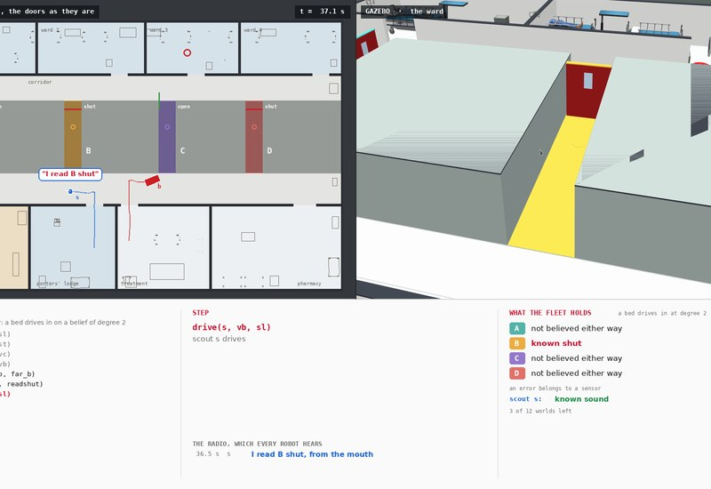
Belief A scout that has read one door shut is believed about the others A short-sighted laser never reads a door shut. A scout that reads B shut is therefore known sound, and when it then reads C open, C is known open: the bed drives into C on the strength of a reading of B, a door it never uses. See the model →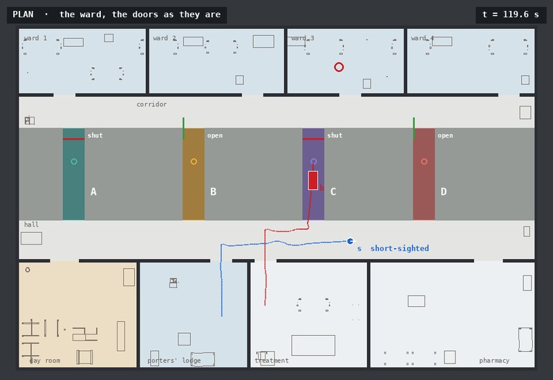
Error Looking twice confirms nothing A fleet that takes errors to be independent from one reading to the next is sure after two looks, and a short-sighted scout gives it two wrong readings as readily as one. A fleet that assigns the error to the sensor is not moved by the second look, and asks another scout or goes up to the door. See the two models →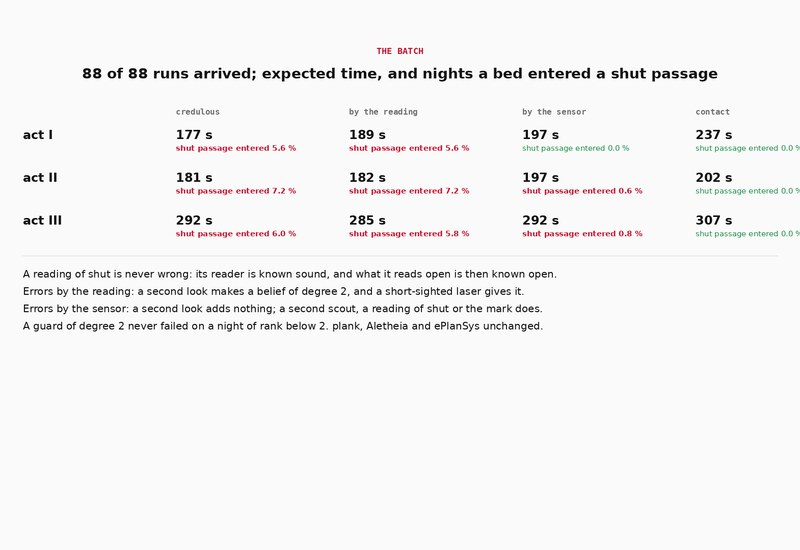
Evaluation The same caution, with and without a sensor in the model Both fleets ask for a belief of degree 2. With errors by the reading a bed is driven into a shut passage on 5.6 % of the nights of act I; with errors by the sensor on none, and 40 s sooner than a fleet that goes up to every door. See the evaluation →Environment
The floor is a single storey of 28 by 18.4 m: rooms off a hall to the south, a band of linen rooms and sluices 5 m deep, a corridor north of the band and four ward bays off it. Four fire passages, A to D from west to east, run straight through the band, each 1.2 m wide and closed by a fire door 4.4 m in. The porter's round leaves two of the four doors shut, any two with equal frequency.
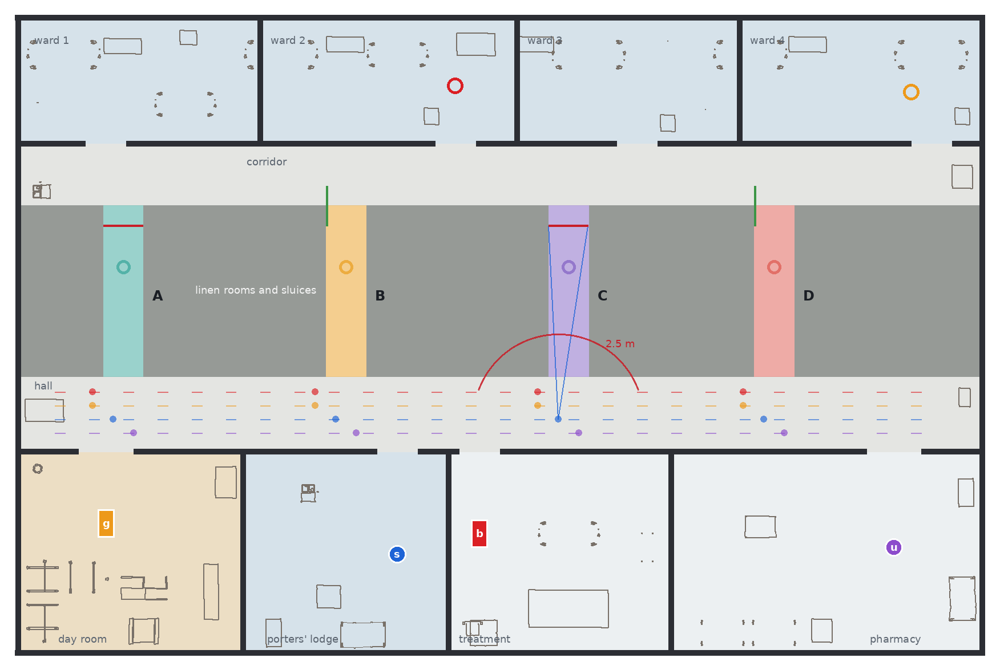
A scout reads a door in two ways. From its place at the passage's mouth it looks down the passage at the leaf, between 5.7 and 6.1 m away. Or it drives in to the mark, 1.2 m before the leaf, reads the door there and drives out. The rule is the same in both places and is the one an occupancy grid applies: returns on the shut leaf's line say shut, none there says open, a ray that returns nothing counting as a ray that passed. A sound laser puts at least 9 returns on a shut leaf from a mouth, with the other robots standing at their own places there; the rule needs 5.
A short-sighted laser returns nothing from beyond 2.5 m, as a laser with a fouled window does not. From a mouth it reads every door open; from the mark it reads right. Two things follow, and the whole demonstration rests on them. A reading of shut is never wrong. A reading of open from a mouth is as good as the sensor that took it. Each laser of the old series is short-sighted one night in nine, each of the new series one night in sixty-five, independently; the fault is injected in the door reader (scripts/door_node.py), which drops the returns beyond the reach before it applies the rule.
A bed-mover is a robot under a bed as long as a passage is wide. It reads a door only from the mark, and from there it crosses, or says the door is shut and backs out at 0.08 m/s, 46 s to the hall. Every robot keeps to its own line along the hall and stands aside at a mouth, the bed-movers out of every scout's view, so that robots pass one another without giving way and no robot stands between a laser and a door.
Ranks and belief
A world of the model is the porter's round and the set of short-sighted scouts: twelve worlds with one scout, twenty-four with two. Its Spohn rank[1] is the sum of the grades of the scouts that are short-sighted in it, 1 for a laser of the old series and 2 for one of the new, read as orders of magnitude[2]. Every world of the epistemic state carries its rank as a grade atom \(g_0, \dots, g_5\), and every relation stays an equivalence. With \(m\) the least grade among the worlds robot \(r\) cannot rule out, \(r\) believes \(\varphi\) to degree \(k\) when \(\varphi\) holds at every such world of grade below \(m + k\):
\[ B^k_r\,\varphi \;=\; \bigvee_{m} \Big( K_r \textstyle\bigwedge_{j<m} \neg g_j \;\wedge\; \hat K_r\, g_m \;\wedge\; K_r\big((g_m \vee \dots \vee g_{m+k-1}) \rightarrow \varphi\big) \Big) \]
\(B^1\) is plain belief, and \(B^k\) for every \(k\) is knowledge. The firmness of a belief is the largest such \(k\): the number of ranks of surprise it would take for the belief to be false. A bed-mover's guard is a formula of this kind, \(B^2_b\,\mathit{open}_c\) under two of the formulations, and the executor evaluates it on the epistemic state before it dispatches the drive into the passage.
A look from a mouth is a sensing action with two events. The scout reads shut where the door is shut and its laser sound; it reads open where the door is open or its laser short-sighted. So the two readings do not teach the same kind of thing. A reading of shut removes every world in which the reader is short-sighted: the scout is now known sound, and whatever it reads open afterwards is known open.
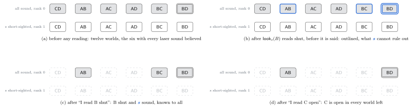
A reading of open teaches a disjunction. After the scout says it read B open, B is believed open, to degree 1: the worlds with B shut are those where the scout is short-sighted, one rank up. A second door read open changes nothing about the first. If the scout then reads a door shut at the mark that it had read open from the mouth, only worlds in which it is short-sighted remain, and the scout knows of itself what it could not have seen.
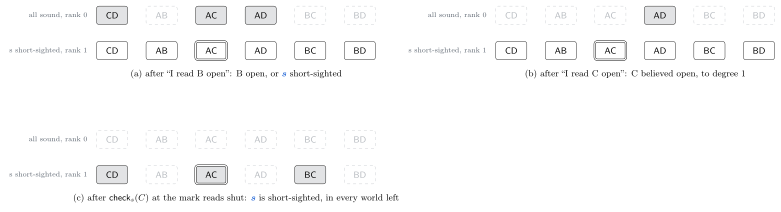
Two models of error
The usual way to allow for a wrong reading is to give each reading its own chance of error, independent of every other; a filter that multiplies the likelihoods of successive measurements assumes it[14]. The second domain of the demonstration is that assumption in ranks. A world is the porter's round and, for each shut door, which of the first and the second look at it errs; its rank is the number of looks that err. There is no sensor in this model, and no reading says anything of another.
The two models are both sound: neither rules out the night that is the case, and the epistemic state never empties. They differ in what they hold plausible, and so in what two readings of open at one door are worth.
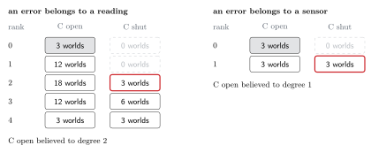
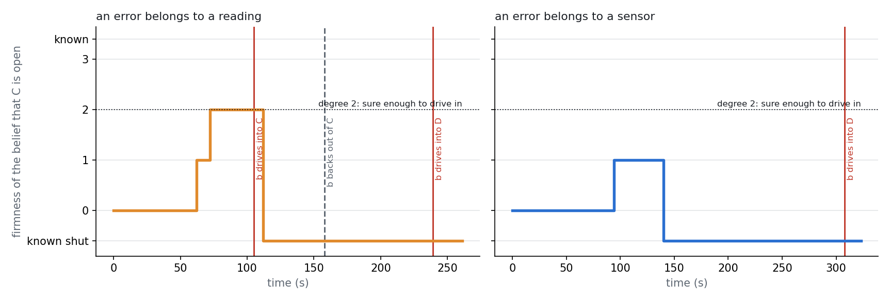
The same holds at every degree. Under errors by the reading, \(k\) looks that read open make a belief of degree \(k\), so whatever degree a fleet asks for, a short-sighted scout supplies it by looking again (Proposition 5). Under errors by the sensor, a guard of degree \(k\) cannot fail on a night whose short-sighted lasers have grades summing to less than \(k\) (Proposition 4).
Two scouts
With two scouts a belief can become firm without anybody going up to a door. If both read B open, B is shut only in worlds where both are short-sighted, at rank 2: the bed-mover drives in. It is not knowledge, and on a night when both lasers are short-sighted the bed finds the door shut; the bed-mover therefore still reads the door at the mark before it crosses. If the two disagree, the one that read shut is known sound and the other known short-sighted, and after the second report every robot knows it, the short-sighted scout included.
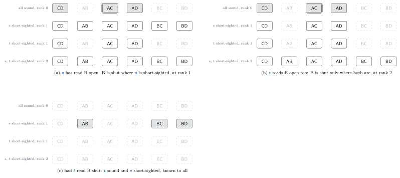
The grade of a sensor is how much its word is worth. In act III one scout has a laser of the new series, of grade 2: its reading of open is a belief of degree 2 by itself, and a bed-mover drives in on it alone, while the old scout's reading still needs a second scout, a reading of shut somewhere, or the mark. The firmness of the belief that a door is open is in every case the least total grade of a set of scouts whose being short-sighted would explain everything read so far with the door shut: the cost of the cheapest diagnosis, in Reiter's sense[9][10] (Proposition 3).
A look can also be aimed at the laser. In act II the credulous fleet's bed finds B shut on some nights; the second scout then looks at B from the mouth, a door every robot already knows to be shut. If it reads shut it is known sound, and what it had read open at A before is now known open.
What is said
A reading is semi-private: its reader sees what it read, the others see that it looked. A report on the radio is a public announcement, and what it announces is the reading, not the fact. “I read C open” has the precondition \(K_s(\mathit{open}_c \vee \mathit{short}_s)\); “I read C shut” has \(K_s(\neg\mathit{open}_c \wedge \neg\mathit{short}_s)\). Every scout says each reading as soon as it has taken it, so between two readings what the fleet knows is common knowledge, and the fleet plans on that state.
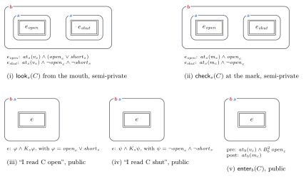
The difference between saying a reading and saying a fact was found by the checker. In a first version a scout that read a door shut said “the door is shut”. Said of a door not yet known shut, that also tells the hearers the speaker is sound, since a short-sighted scout could not know it. Said of a door already known shut it tells them nothing, and a policy that counted on the scout being known sound afterwards had a bed-mover cross a door it did not know to be open; the replay through the product update stopped there.
Fleets and acts
| formulation | an error belongs to | a bed-mover drives in when | what it stands for |
|---|---|---|---|
| credulous | a sensor | it believes the door open, \(B^1\) | A sensing action as it is usually written: the reading is taken for the fact. It plans as if no laser were short-sighted. |
| readings | a reading | it believes it to degree 2, \(B^2\) | Independent measurement noise, and the same degree of caution as the next fleet. |
| sensors | a sensor | it believes it to degree 2, \(B^2\) | The fault as it is: persistent, and a property of the laser. |
| contact | a sensor | it knows it, \(K\) | No reading from a mouth is used; a scout reads every door at the mark. |
The credulous fleet is given the model with sensors in it, in which its own beliefs can be wrong; in a model without faults a wrong reading would empty the state. Each fleet plans in its own model and to its own guard, with the same search.
| act | scouts | bed-movers | worlds, by sensor | worlds, by reading |
|---|---|---|---|---|
| I | s, old series, from the porters' lodge | b, treatment room to ward 3 | 12 | 96 |
| II | s from the lodge and t from the day room, both old | b, treatment room to ward 2 | 24 | 96 |
| III | s, old, from the lodge and u, new, from the pharmacy | b to ward 2 and g, day room to ward 4 | 24 | 96 |
The planner
The policy is one tree for the whole fleet. The fleet decides whenever a reading has been said: each scout is given its next reading, a door and whether from the mouth or the mark, and each bed-mover the mouth it waits at. The robots then act until the next reading. A bed-mover that becomes sure enough of a door goes for the one that takes it soonest to its ward. The search is dynamic programming over what is known and where the robots stand, with a lower bound to cut it, and it minimises the expected time to the last delivery, a world of rank \(k\) weighing \(8^{-k}\). It is exact for policies of this form, up to the two mouths it considers for a waiting bed-mover.
Time is counted as ePlanSys spends it. The executor starts chains of independent actions together and ends a group with its longest member, so a look taken while another robot crosses the hall is paid for at the length of the crossing. The planner counts its groups the same way, and every robot's places along the hall carry its own name, so that two robots' drives name nothing in common and are dispatched together. On every night of act I the time of the planner's groups is the time of the groups tools/schedule.py, a port of the executor's scheduler, makes of the policy; in acts II and III they differ by at most 7 and 31 s on a night, where the scheduler moves an action above an independent one.
| act | formulation | expected time (s) | with every laser sound (s) | nights a bed enters a shut passage (%) | distinct paths | states searched |
|---|---|---|---|---|---|---|
| I | credulous | 198.8 | 193.5 | 5.6 | 5 | 119 |
| I | errors by the reading | 210.9 | 204.2 | 5.6 | 5 | 5,410 |
| I | errors by the sensor | 223.1 | 210.5 | 0 | 6 | 488 |
| I | contact | 271.7 | 271.7 | 0 | 3 | 45 |
| II | credulous | 191.3 | 183.3 | 7.2 | 9 | 4,006 |
| II | errors by the reading | 198.7 | 190.7 | 7.2 | 8 | 239,020 |
| II | errors by the sensor | 203.5 | 198.8 | 0.6 | 9 | 36,040 |
| II | contact | 238.7 | 238.7 | 0 | 3 | 351 |
| III | credulous | 321.5 | 315.8 | 6.0 | 9 | 197,341 |
| III | errors by the reading | 329.0 | 323.7 | 5.8 | 8 | 5,133,779 |
| III | errors by the sensor | 326.2 | 316.0 | 0.8 | 19 | 408,575 |
| III | contact | 370.5 | 370.5 | 0 | 4 | 2,446 |
What the policies do with a first reading of open shows the difference between the fleets. The credulous bed-mover drives in. The fleet with errors by the reading has its scout look again from where it stands, which costs ten seconds. The fleet with errors by the sensor chooses among three ways of making the belief firm: sending the scout to another door, where a reading of shut would make the first reading knowledge; bringing the second scout; or sending the scout up to the door. Which is cheapest depends on where the robots stand, and the policies use all three.
Analysis
A model is \(M = (W, (\sim_r)_r, \kappa, V)\) with every \(\sim_r\) an equivalence and \(\kappa : W \to \mathbb{N}\). For a set \(X\) of worlds, \(\kappa(X)\) is the least rank in it. The firmness of \(\varphi\) for \(r\) at \(w\) is \(\kappa([w]_r \cap [\![\neg\varphi]\!]) - \kappa([w]_r)\), infinite when \(r\) knows \(\varphi\), and \(B^k_r\varphi\) holds when it is at least \(k\). The proofs are in the report.
Propositions 4 and 5 are the result in two lines. Both fleets ask for the same degree of belief. What the degree protects against is fixed by the model: with sensors, against one faulty laser; with readings, against one faulty reading, which a faulty laser exceeds as soon as it is asked twice. Belief of degree 2 is not knowledge under either, and Proposition 4 says exactly on which nights it fails: those of rank 2 and above, two old lasers short-sighted or one new one.
Evaluation
A policy takes the same path on every night on which its lasers read the same. Every distinct path of every policy was run once in Gazebo, on the first night that takes it, from starts perturbed by up to 5 cm and 5°: 88 runs for the 60 nights of the three acts under four formulations. A run's time is measured from the start of its first action to the last bed's delivery, in simulated seconds. Expectations weigh the nights by their frequencies, the rounds equally and each laser short-sighted or not independently.
| act | formulation | runs arrived | expected time, s (predicted) | nights a bed enters a shut passage, % (predicted) | every laser sound: time, s | one short-sighted: time, s | one short-sighted: shut passage, % |
|---|---|---|---|---|---|---|---|
| I | credulous | 5/5 | 177.2 (198.8) | 5.6 (5.6) | 171.5 | 223.1 | 50.0 |
| I | errors by the reading | 5/5 | 189.3 (210.9) | 5.6 (5.6) | 182.4 | 244.7 | 50.0 |
| I | errors by the sensor | 6/6 | 197.3 (223.1) | 0 (0) | 185.9 | 289.2 | 0 |
| I | contact | 3/3 | 237.2 (271.7) | 0 (0) | 237.2 | 237.2 | 0 |
| II | credulous | 9/9 | 181.5 (191.3) | 7.2 (7.2) | 173.8 | 207.4 | 33.3 |
| II | errors by the reading | 8/8 | 181.9 (198.7) | 7.2 (7.2) | 174.4 | 209.4 | 33.3 |
| II | errors by the sensor | 9/9 | 196.8 (203.5) | 0.6 (0.6) | 193.8 | 204.8 | 0 |
| II | contact | 3/3 | 201.8 (238.7) | 0 (0) | 201.8 | 201.8 | 0 |
| III | credulous | 9/9 | 291.9 (321.5) | 6.0 (6.0) | 286.9 | 326.9 | 48.1 |
| III | errors by the reading | 8/8 | 285.3 (329.0) | 5.8 (5.8) | 280.0 | 322.8 | 46.3 |
| III | errors by the sensor | 19/19 | 292.3 (326.2) | 0.8 (0.8) | 283.9 | 349.6 | 5.6 |
| III | contact | 4/4 | 307.0 (370.5) | 0 (0) | 307.0 | 307.0 | 0 |
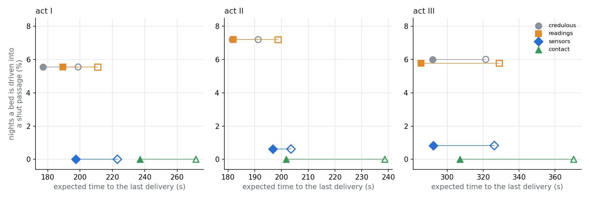
All 88 of 88 runs arrived, and in every run the executor ran the actions the policy has for the night. A bed was driven into a shut passage in 12 of the credulous fleet's 23 runs, in 10 of the 21 with errors by the reading, in 8 of the 34 with errors by the sensor, and in none of the 10 of the fleet that reads every door at the mark: on exactly the nights the policies predict, so the shares of nights in the table are the planned ones.
The two fleets that ask for a belief of degree 2 differ by the model alone. With errors by the reading a bed enters a shut passage on 5.6, 7.2 and 5.8 % of the nights of acts I, II and III, against the credulous fleet's 5.6, 7.2 and 6.0 %: the second look buys no safety. With errors by the sensor the share is 0, 0.6 and 0.8 %, all of it on nights of rank 2 or more, as Proposition 4 allows: both old lasers short-sighted in act II, the new one in act III.
In time the fleets lie closer than planned. Measured times are below the planned ones throughout, by 7 % on average for the credulous fleet, 9 % with errors by the reading, 8 % with errors by the sensor and 15 % for the fleet that goes up to every door: the durations the planner is given are declared ones, and the drives in a passage and the readings ran faster than declared, which favours the fleets that use the mark. With every laser sound the fleet with errors by the sensor took 14 s longer, 20 s longer and 3 s less than the credulous one in acts I, II and III, and the fleet that goes up to every door 66 s longer, 28 s longer and 20 s longer.
The difference between the last two fleets, the cautious ones, is what the model of the sensor is worth: readings from a mouth that are knowledge once the reader has read a door shut, agreement between two scouts, and the word of a better laser. Over all nights it was 40 s in act I, 5 s in act II and 15 s in act III, where 49, 35 and 44 s were planned. In act II the gain is nearly gone: with two scouts starting beside the two nearest doors, going up to them cost little more on the floor than reading them from the hall.
On a night with one short-sighted laser the credulous fleet was still the quicker in act I, 223 s against 289 s, although its bed backs out of a passage on half of those nights: backing out takes less than a minute, and the fleet with errors by the sensor spends more than that sending its scout up to doors. The comparison is of time alone. What a bed in a dead passage costs a ward is not in it, and a fleet for which that cost is high will not take the credulous policy for its speed.
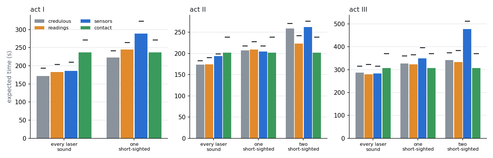
The table gives act I night by night; the report has the three acts. A night is named by the two doors shut and, after the dash, the short-sighted scout; a cross marks a bed driven into a shut passage.
| night | frequency | credulous | errors by the reading | errors by the sensor | contact |
|---|---|---|---|---|---|
| CD | 0.1481 | 275 | 278 | 191 | 221 |
| CD-s | 0.0185 | 326 × | 473 × | 392 | 221 |
| AB | 0.1481 | 131 | 142 | 152 | 260 |
| AB-s | 0.0185 | 131 | 142 | 228 | 260 |
| AC | 0.1481 | 181 | 195 | 191 | 221 |
| AC-s | 0.0185 | 310 × | 285 × | 329 | 221 |
| AD | 0.1481 | 131 | 142 | 228 | 221 |
| AD-s | 0.0185 | 131 | 142 | 228 | 221 |
| BC | 0.1481 | 181 | 195 | 200 | 240 |
| BC-s | 0.0185 | 310 × | 285 × | 329 | 240 |
| BD | 0.1481 | 131 | 142 | 152 | 260 |
| BD-s | 0.0185 | 131 | 142 | 228 | 260 |
Night AC-s is the one the film follows. The credulous bed drives into C on one reading and backs out (310 s); with errors by the reading the scout looks twice and the bed does the same (285 s); with errors by the sensor the scout reads B and C open, goes up to C, finds it shut and so knows itself short-sighted, goes up to D, and the bed drives into D only (329 s). On night BD the scout reads B shut and then C open, and the bed drives into C knowing it open, in 152 s against 260 s for the fleet that goes up to the doors.
Implementation findings
A report has to say the reading, not the fact. In the first version a scout that read a door shut said “the door is shut”, with the precondition that it knows so. Said of a door not yet known shut, that also tells the hearers the speaker is sound, since a short-sighted scout could not know it; said of a door every robot already knows to be shut, it removes no world. A policy of the credulous fleet in act II has the second scout look at such a door to find out about its own laser, and counted on the scout being known sound afterwards. tools/policy_check.py stopped at the bed-mover's crossing of a door it did not know open in the product update. The domain now has a report of what was read from the mouth, with the precondition \(K_s(\neg\mathit{open}_d \wedge \neg\mathit{short}_s)\), beside the report of a door known shut.
The planner counts time in the executor's groups, and the two agree where the earlier demonstrations' did not. Every robot's places along the hall carry its name, since it keeps to its own line, so two robots' drives name nothing in common and ePlanSys dispatches them together; with shared place names it ran them one after another. On every night of act I the policy's time by the planner's groups is its time by the ported scheduler's; in acts II and III the scheduler sometimes moves an action above an independent one and the two differ by up to 7 and 31 s on a night.
A group ends with its longest member, so a reading taken while another robot crosses the hall is paid for at the length of the crossing. The policies show it: the fleets read while the bed-movers stand, and move the beds between readings. A search that counted each robot's time separately would have planned readings the executor then holds back.
The search took from under a second to an hour and three quarters. With errors by the sensor the public state is a set of at most 24 worlds; with errors by the reading it is a set of 96, and with four robots the search of act III valued five million states. Policies are kept on disk, keyed by the fleet, the formulation and every duration, and the planner plugin reads them at the start of a run.
The planner is given declared durations, a length over a speed and a few seconds a turn, and the floor ran under them: a drive took 93 % of its declared time on average, a drive in a passage 91 %, a reading 71 %, a report 89 %. The policies are optimal for the declared figures. Since what is overstated most is what a reading and a visit to the mark cost, a planner given the measured figures would go to the mark somewhat more often.
The recorder is sometimes stopped before the success of the last drive reaches it, and sometimes misses the start of an action whose success it has. The analysis then takes the mission's end as the delivery's time, which is up to a second later.
Aletheia's own search does not find a policy for the first act within five minutes; it reached depth 12. The policies come from tools/plan.py, and Aletheia's plugin validates each against the grounded task before every run.
The fault is of one kind, persistent and one-sided: a short-sighted laser reads open what is shut and never the reverse, on every look. The model with sensors is the true model of that fault, and the model with readings is not; under a fault that came and went from one look to the next the comparison would turn, and a fleet that could not tell which kind it faced would need both kinds of world in one model. A reading at the mark is taken to be right, and the frequencies of the faults are taken as known.
The fleet is of one mind. Every robot holds the same ranking, every reading is said as soon as it is taken, and nothing is said that is not true, so between two readings everything the fleet knows is common knowledge and the planner searches over sets of worlds. A scout that chose what to report, or robots that ranked the faults differently, would bring back the nested beliefs of the mixed fleet, at the cost of a search over models.
The guard is a threshold on a rank and the plan an expectation of time. The two are not tied: the degree a bed-mover asks for is given, not derived from what a bed in a dead passage costs. The search is exact only for policies of its form, with one reading at a time for each scout and two mouths considered for a waiting bed-mover. Each path was run once, and all results come from one floor, in simulation.
References
Reproduction
bash tools/validate.sh # floor, problems, every policy against the product update, the schedule python3 tools/plan.py --act 2 --formulation sensors --show python3 tools/plan.py --act 1 --formulation readings --show --night AC-s # one night's path bash tools/run_one.sh 1 6 readings RUN 1 # act I, night AC-s, lane 1 bash tools/batch.sh BATCH 6 # every distinct path of every policy, once python3 tools/analyse.py BATCH # runs.csv and analysis.json